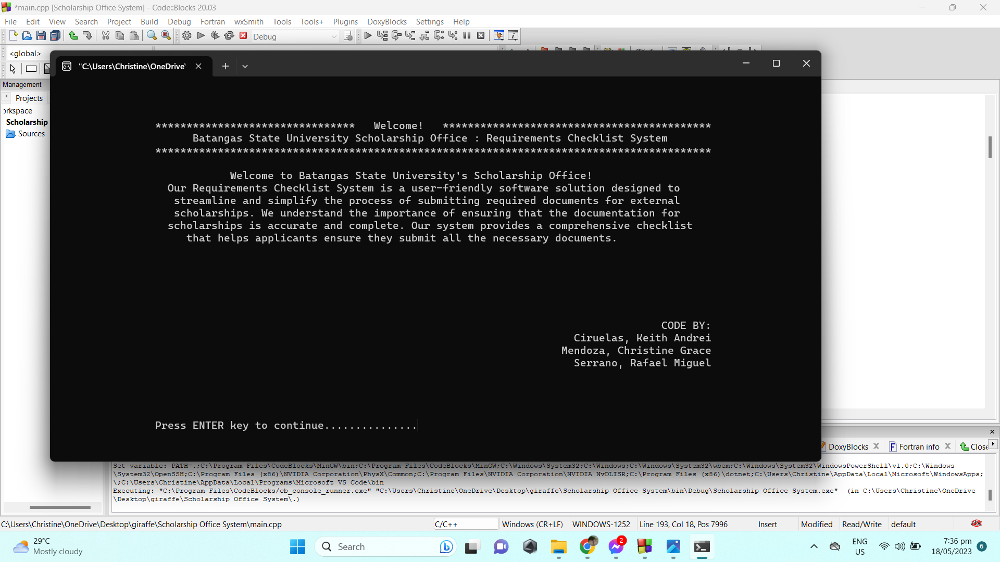
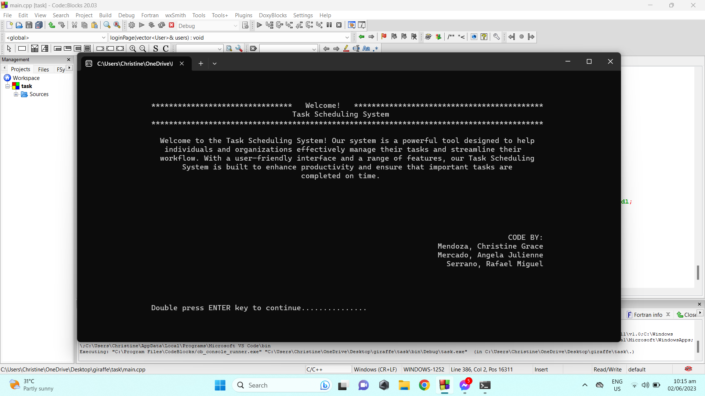
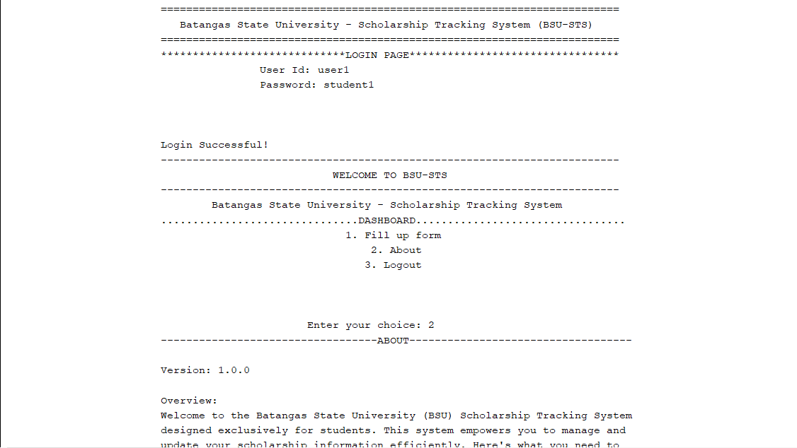
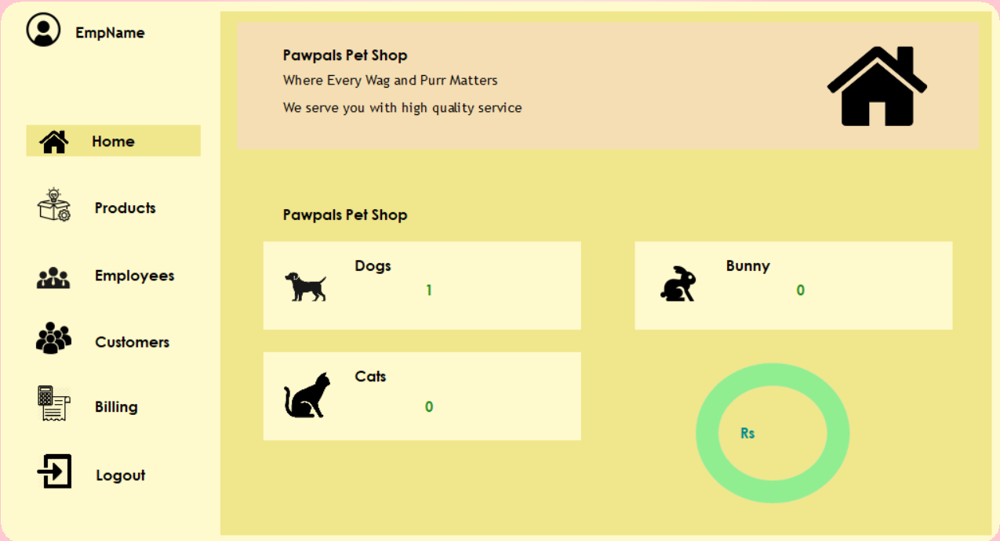
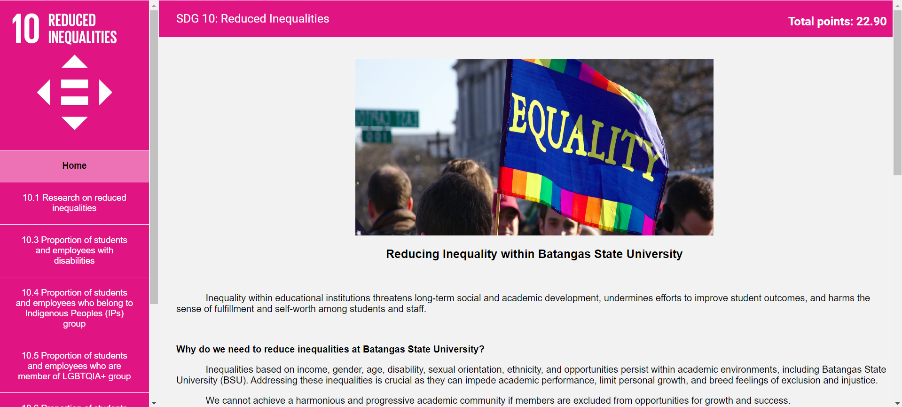
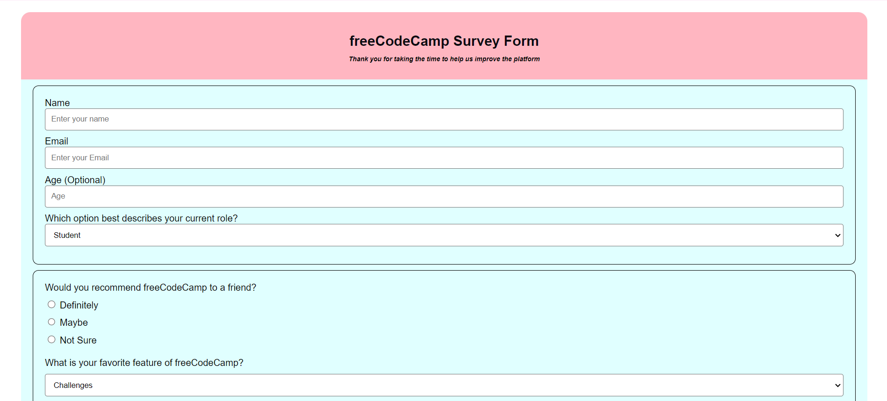

Batangas State University - Requirements Checklist

Scholarship Requirements Checklist (Data Structures and Algorithms): This project was created during our first year for the subject Data Structures and Algorithms. It is a console application developed in C++ for the Scholarship Office. The admin can monitor, check, view, and delete records, while students (specifically HIM Scholars) can check the scholarship requirements and mark whether they meet certain criteria.
Task Scheduling System

Task Scheduling System (Data Structures and Algorithms): This console application was an additional project for Data Structures and Algorithms, where our professor allowed us to improve our grades. The application, developed in C++, helps with time management by scheduling tasks effectively.
Pawpals UI
PawPals UI (Database Management System): This project was created as partial fulfillment for Database Management System. PawPals is a user interface that allows pet lovers to adopt pets. Similar to Tinder, users can swipe left or right to like or dislike a pet. Interested adopters fill out information, which is submitted to the pet provider. Pet providers can post pets for adoption and review whether adopters are qualified.
Batangas State University - Scholarship Tracking System (BSU - STS)

Scholarship Tracking System (Object-Oriented Programming): This was a final project for Object-Oriented Programming and a request from the Scholarship Office to track students with and without scholarships. We developed this console application in Java.
Pet Shop Management System

Petshop Management System (Computer Programming 2): For our final project in Computer Programming 2, we developed a system based on a YouTube tutorial by MyCodeSpace. The system manages customers, billings, employees, and products for a pet shop. We used C# for this project.
SDG 10: Reduced Inequalities

SDG 10: Reducing Inequalities (Advanced Database Management System): This was our final project for Advanced Database Management System, based on a document provided by our professor. The project is essentially a survey form and includes a point system that previous students failed to complete. We used HTML, CSS, and PHP to develop it.
Free code camp

FreeCodeCamp Survey Form: This project was based on a design our professor provided. We replicated the form and added our own customizations. The survey form was developed using HTML and CSS.